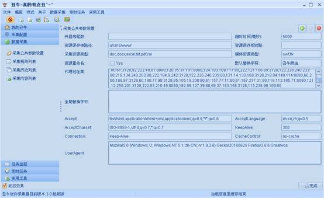

采集公共参数设置说明
一：总体说明
（1）系统在开始采集时，会先读取公共参数配置中的信息来初始化，整个采集过程将按照配置来执行。
二：参数说明
如图

（1）：开启线程数：系统支持多线程采集，默认线程数是当前主机CPU数量，一般不必填写。
（2）：超时时间：采集一条数据最大等待时间，默认5000毫秒，一般默认即可。
（3）：资源保存根路径：如果采集参数配置中，勾选了资源采集，则保存资源时将以此相对路径保存文件（以系统安装目录为根目录），且内容中的资源地址连接也将变为此路径，注意：路径开头无反斜杠（/）最后必须以反斜杠（/）接受，如：u/cms/www/。如果配置了FTP上传则以此目录在FTP目录根目录创建此目录。
（4）：资源保存相对路径：此路径是相对于根路径配置的，如果配置了此值则保存在配置的目录下，否则系统将按照时期生成文件夹。
（5）：采集资源类型：系统只采集配置的资源类型，多个后缀名以逗号分隔（,）。
（6）：媒体资源类型：系统只采集配置的资源类型，多个后缀名以逗号分隔（,）。
（7）：资源重命名：勾选后，系统将会重新生成文件名。
（8）：默认替换字符：这里与全局替换字符相关，配置了该值后，系统将会以该值替换采集回来的数据中要替换的字符。
（9）：全局替换字符：系统将替换采集回来的数据中要替换的字符，有2种格式
格式1为：
要替换的字符=替换后的字符，多个以逗号分隔（,）
格式2为：(这里的值将会被默认替换字符替换)
要替换的字符1, 要替换的字符2
可以混合使用：
要替换的字符=替换后的字符,要替换的字符1
（10）剩下的配置是模拟浏览器相关的配置，非专业人士，一般不用修改。